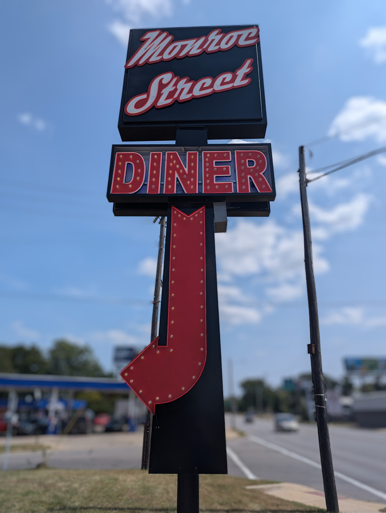
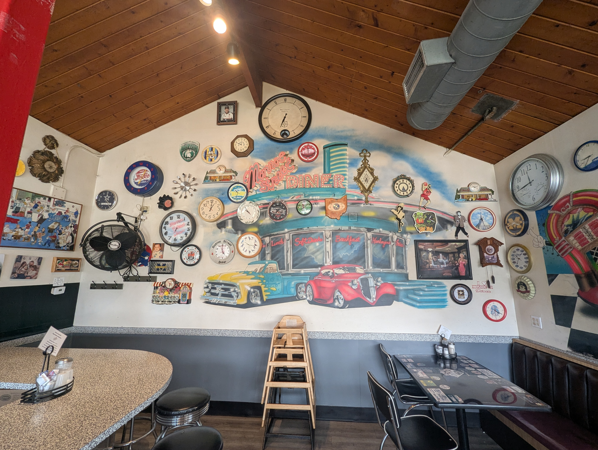
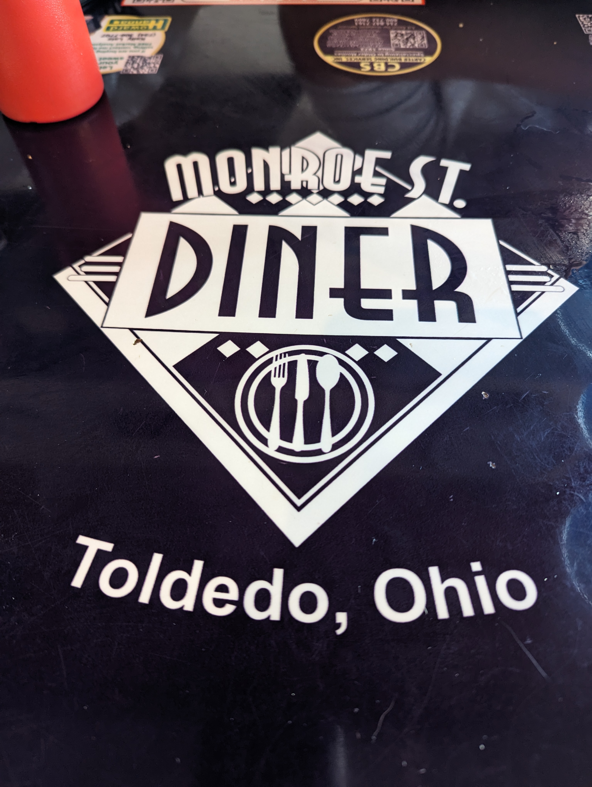
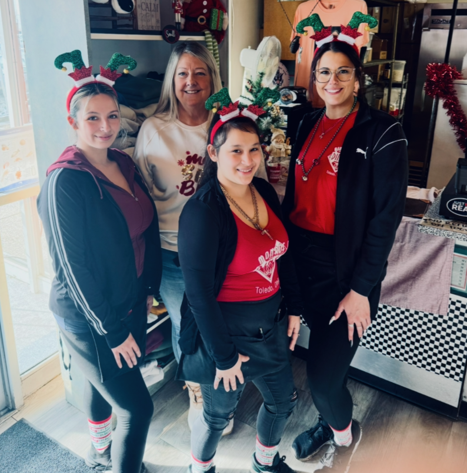
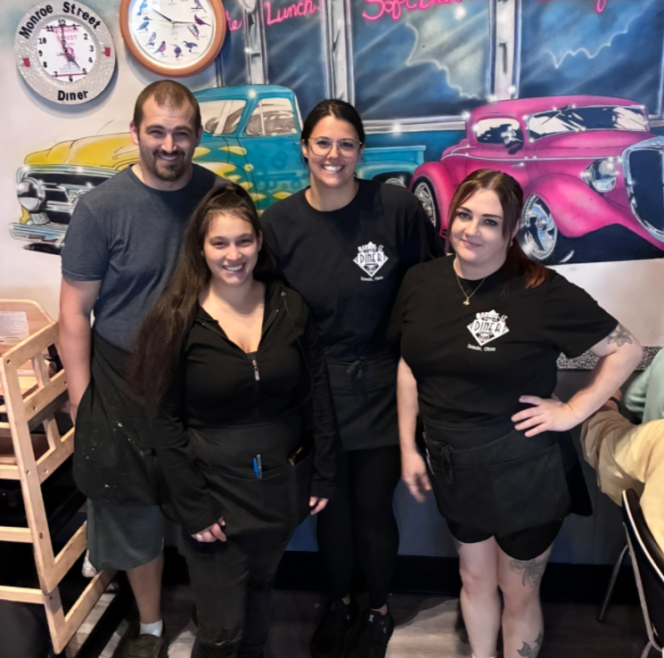

Monroe Street Diner: A Toledo Institution Hidden in Plain Sight
I’m a simple guy who enjoys simple things, and that rings particularly true with food. Sorry not sorry, but I’m not interested in your artisanal sourdough bread with truffle butter and dry-aged cheese. Give me a quality cheeseburger and fries and I’m happy. And when it comes to restaurants, I’ve always been a huge fan of a good ol’ fashioned diner. A solid “mom n’ pop” appeals to me in a big way. About three years ago, my family and I decided to try out a new place (well, new to us) near our house in West Toledo for breakfast. Little did we know at the time that we had stumbled upon our go-to spot from here on out.
Monroe Street Diner.
If you’ve never been, the exterior is fairly unassuming, with its red brick walls and black awning. Once you get inside, though, it’s anything but. The walls are decorated with large, brightly colored hand-painted murals depicting 1950s-style roadside diners, complete with classic cars, jukeboxes, and rock-and-roll imagery. But most likely, the first thing new customers take note of is the large number of clocks lining the walls. There are somewhere in the neighborhood of 250, as I discovered when speaking to owner Gayle Francis, and the collection has accumulated over time since they opened their doors some 32 years ago.

“When we first opened and remodeled it, we had to put some walls in, take some walls out, so it was very plain at the time. Some customers came in, he was a retired Toledo police officer, and she was an antique guru. So they brought me this clock right here, and I put it right on this wall, which was just a white wall then. And with the lights up there, it just sort of shone in the light. So people started saying, ‘Oh, you like clocks?’ and I’m like, ‘I like that clock,’ you know. And so it slowly became 10 and then 20, and through the years, I’ve gotten well over 200, and they’re from everywhere.”
She went on to explain that roughly two dozen of them were purchased by customers traveling internationally, including places like Australia, Argentina, China, Japan, and the Netherlands.
During our chat, I also learned that the diner almost never happened because it actually started out briefly as a pizza place called Grand Slam Pizza back in 1994, when Gayle and Mike took over the restaurant. Having worked in the restaurant business since the age of 14, she quickly realized that the pizza market in the area was oversaturated and that the odds for success were stacked against them. Coupled with the fact that there was a noticeable lack of locally owned diners nearby and her overwhelming pregnancy cravings for diner-style cuisine, she decided to rebrand as a diner instead, just a few months after taking over the space. That turned out to be the right call, as Monroe Street Diner has clearly stood the test of time. Over the years, its distinctive look has even caught the attention of filmmakers and musicians, with the diner being featured in two films and a music video.
Once you seat yourself in the dining area, you’ll probably take note of their personalized tabletops. And if you take a closer look, you may notice what Bob Ross might refer to as a “happy little accident.”

Yup. Toldedo.
Shortly before the pandemic, Monroe Street Diner won a social media contest where they were voted favorite diner by small businesses in the area and were offered custom tables featuring advertisements for those businesses. After months of back and forth with the company on design choices, Gayle waited impatiently to see proofs for the final product. Instead, the tables unexpectedly arrived at their doorstep one day, and it wasn’t until after they were already in place that they noticed something was off.
“My son sends a picture to Mike, his dad, and says, ‘Hey, look how cool these tables look!’ Well, of course, Mike zooms in to look at all of it, and he goes, ‘Um, what the heck’s up with that?!’”
She tried calling the company that had sent them, but they gave her the runaround, insisting that she was responsible for the typo. Not long after, the pandemic hit, the company went out of business, and the diner ended up stuck with the Toldedo-emblazoned tables.
Fortunately, the mistaken spelling has become something of a hit with patrons. People have suggested there should be a dish on the menu called “The Toldedo,” while others have even requested to take one of the tables home to put in their man cave when she eventually replaces them.
But as memorable as the diner itself is, the people who work there are arguably one of the biggest reasons customers keep coming back. Other than Gayle and her daughter Kenzie, the diner only employs seven other people, but you’d never know it from the speed and quality of service you receive when you’re there.

The waitstaff is a rotation of four waitresses, each with their own unique personalities. I joked with Gayle that her waitresses are kind and thoughtful, but that they all strike me as women that you wouldn’t want to mess with or cross in any way, and she told me that couldn’t be truer.
You’ve got the Garcias: Victoria, now in her 11th year with the diner, and her younger sister Raquel, who isn’t too far behind in tenure. Raised on the east side of Toledo, they both possess a toughness that comes with being brought up in the struggle but couldn’t possibly be warmer and more personable with everyone they encounter. You’ll have no trouble hearing Victoria, as she's always got an anecdote to share at a high volume. Raquel tends to be quieter and more reserved but is often the first to have everyone’s “usual” order memorized. Kenzie, Gayle’s daughter, is the tall one with a great sense of humor and can often be found catching up with one of the many “regulars.” And lastly, there’s Stephanie Kidder, the hard-working mom running from table to table and answering the phone for their seemingly never-ending stream of takeout orders.

And it’s not just the waitresses who go above and beyond for the customers. I recently came in by myself for a bite to eat, and the waitstaff was occupied serving others, so I sat patiently waiting for my turn. Next thing I know, Victoria walks up to me and says, “Robby asked if you planned on having your usual.” I said yes, and she handed me a plate with my order exactly how I like it, without ever having spoken to anyone on the waitstaff. And I don’t dine there five days a week—they just put that much effort into knowing their customers. So not only are the waitresses excellent at giving top-tier customer service, but they’ve also got the fellas in the kitchen giving that extra special treatment as well—and with a fraction of the praise.
That brings us to the other star of the business: the food. My intent isn’t to turn this into a food review, as it’s completely subjective, but I can attest that I’ve never had a single bad experience in the years we’ve been dining there. What I can tell you is that you’d be hard-pressed to find a diner in the area that offers better-tasting, generously portioned food that’s consistent in quality and offered at a fair price. They offer many of the traditional dishes you’d expect from a diner, as well as some of their more original creations.
Two of their flagship menu items are burgers: The Huntsman, named after Gayle's son Hunter, and the Johny Smashburger, named after longtime Toledo radio personality Johny D as a heartfelt thank-you for his efforts helping the diner survive through tough times.
When the pandemic hit, Johny was on the radio one day when he offered to help local businesses whose bottom lines were taking a hit.
“Johny was on the radio, and there was nobody in the diner because we were closed except for to-gos, and he said, ‘Hey, anybody out there who’s hurting for business, call.’ So I called, and he said, ‘All right Gayle, what are you doing over at Monroe Street Diner?’ So I'd call back the next day, and it just became a thing. He'd say, ‘What do you have on special?’ and I'd say, ‘We have chili mac today,’ and I'd hang up and the phone would ring, and I'd sell out of chili mac in no joke 15 minutes. And it was like that every day. So I told him, ‘I am gonna make it through this because I've been here long enough, I have great customers, and because of you giving me this free advertising that you're offering to everyone.’”
Not long after, one of Gayle’s customers called Johny on the air.
“She said, ‘You know, I love Monroe Street Diner, and Gayle's always calling and talking about her burgers. If she loves you so much, why don't you have a burger named after you?’”
And the rest, as they say, is history.
Gayle also informed me that during the lockdown, another major factor in keeping them afloat was that many of her longtime customers purchased sizable gift cards in an effort to help her and the staff get through the lean times. I, for one, think that speaks volumes about the type of clientele the diner maintains and is a testament to how much the restaurant means to them.
What escapes me is that, despite Monroe Street Diner hardly being an unknown in Toledo and maintaining an overwhelmingly positive reputation both online and through word-of-mouth, you rarely see their name come up when the “best of” in the city is discussed. Which I'll never understand, because what exactly does “best of” mean? Great food? Check. Enjoyable atmosphere? Got it. Personable staff? Has that in spades. Long-standing history in the city? I’d say they more than qualify.
Whatever the reason, I think it’s time for Monroe Street Diner to have its due. So do them a favor: If you’re a fan of theirs, tell your friends and family about them or send them this article. Don’t assume they’re already in the know. And if you’ve never given them a try, take a trip sometime soon and see what you think for yourself.
I know that I’m extremely glad that we did. Let’s see to it that the diner is around for years to come for future generations to enjoy.